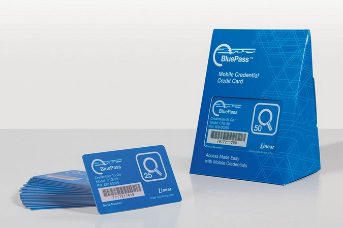
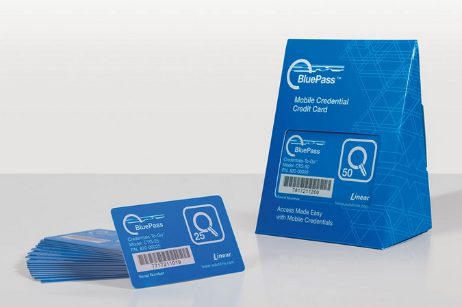

Linear BluePass Mobile Credential
Today, many businesses are looking to migrate away from their outdated, inflexible and unwieldy RFID card or keyfob-based physical access control systems in favor of smartphone-based credentials.
Today, many businesses are looking to migrate away from their outdated, inflexible and unwieldy RFID card or keyfob-based physical access control systems in favor of smartphone-based credentials.
